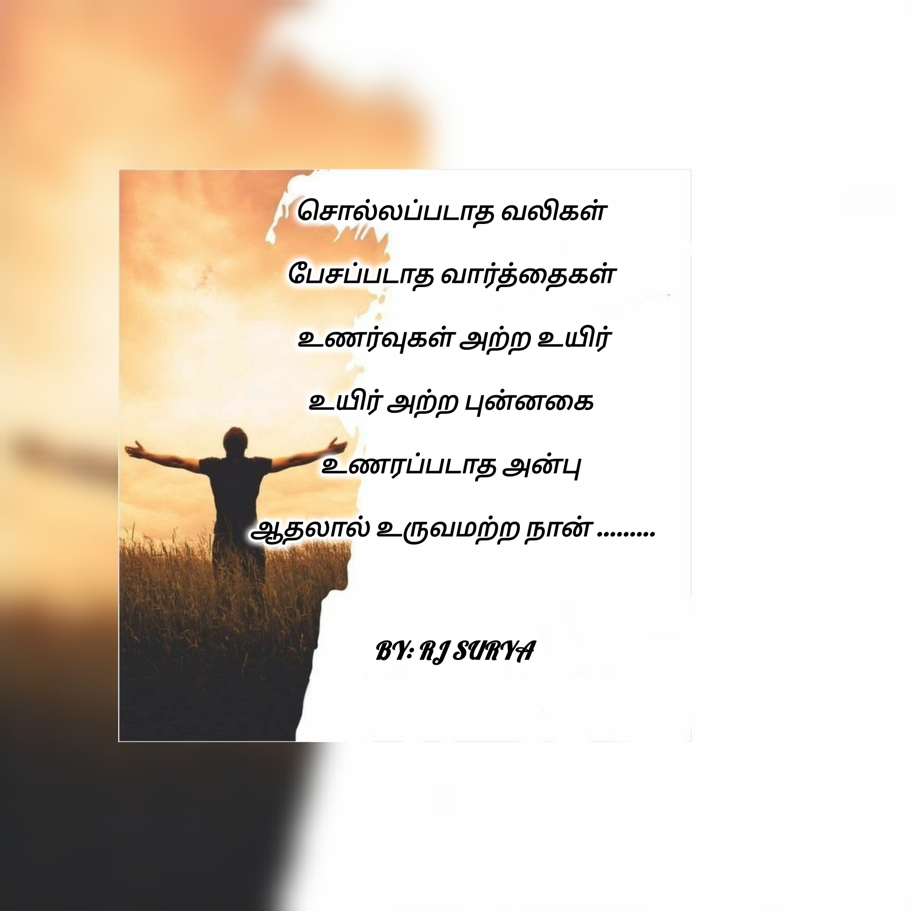

சொல்ல முடியாத உணர்வுகளுக்கு சொற்கள்.
என் எழுத்துக்கள்நான் Suriyaraj Gunasekaran.
என் எழுத்துப் பெயர் RJ Surya.
சொல்ல முடியாத உணர்வுகளையும், மனதில் மறைந்து கிடக்கும் எண்ணங்களையும், வார்த்தைகளாக மாற்றும் ஒரு சிறிய முயற்சிதான் என் எழுத்துக்கள்.
கவிதைகள், உணர்வுகள், வாழ்க்கை, காதல், வலி, மனிதர்கள் — இவை அனைத்தும் என் எழுத்தின் ஒரு பகுதியாக இருக்கின்றன.
— RJ Surya

— RJ Surya
A collection of thoughts, feelings and stories — written by RJ Surya.
Whenever I need poetry, I seek refuge in the sound of her anklets. They beautifully describe her and every movement of hers.
Even after being shattered into countless pieces, how does the painting called “her” still look so beautiful, even in those tiny fragments?
The very flowers that bloomed at the sight of her smile that day are now set ablaze at the sight of her tears……
She is a book difficult to read; yet I am the reader who wishes to read its lines with care……
Even the pride of the most beautiful male peacock would shatter at the sight of her, who needs no wings to outshine its splendour.
In my search for poetry, she gave life to so many living poems... Yet, she refused to breathe life into my heart, and perhaps forgot it too. Still, she may never know that I continue to live through the poems she brought to life.
Though night and day keep taking turns,
The only thing that remains is her memories...
காதல், பிரிவு மற்றும் நினைவுகளின் ஆழத்தில் ஒரு பயணம்.
அழகையும் மங்கையின் மதிமுகத்தையும் வர்ணிக்கும் சில வரிகள்.
A meaningful story about a mother's struggle and self-respect.
என் புதிய எழுத்துக்கள் மற்றும் கவிதைகளுக்காக என்னை Instagram-ல் பின்தொடருங்கள்.
@am_the_king_rj